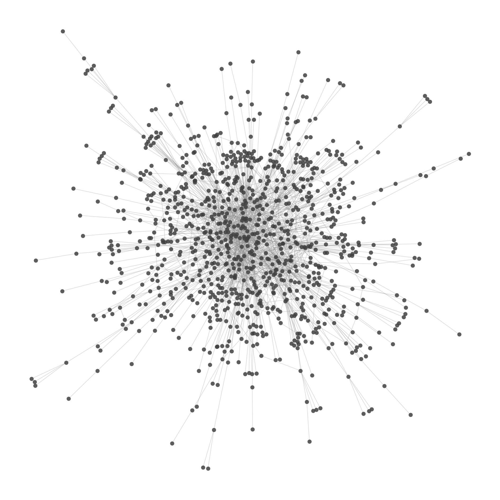
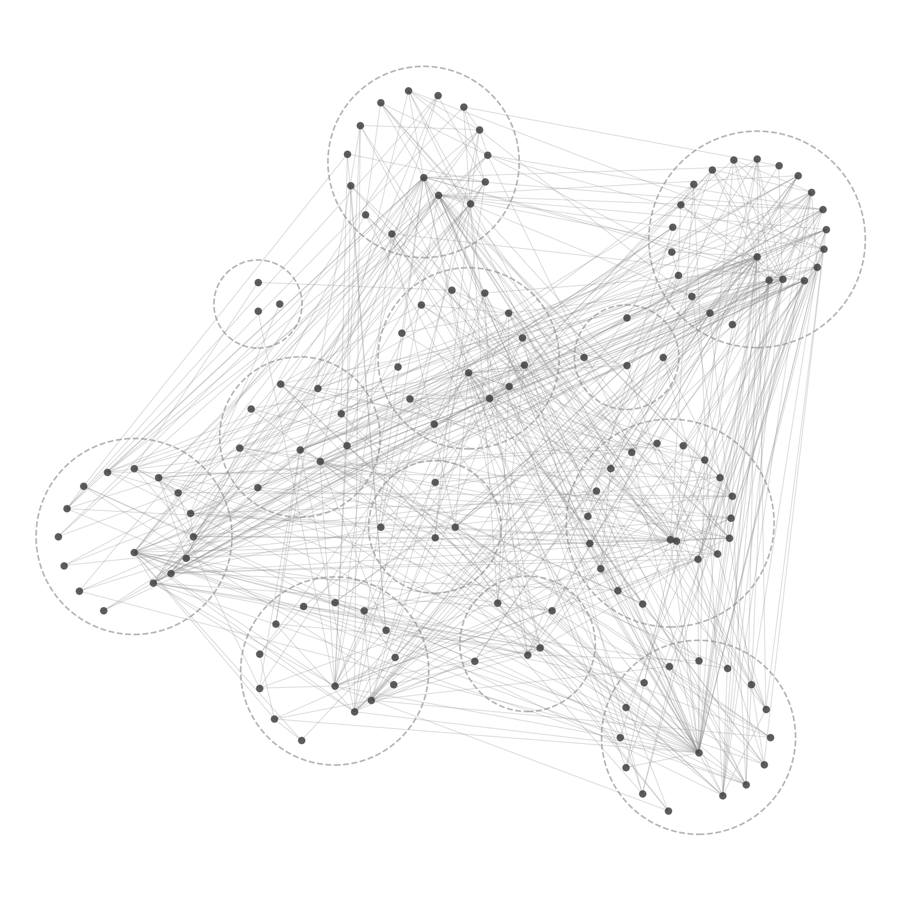
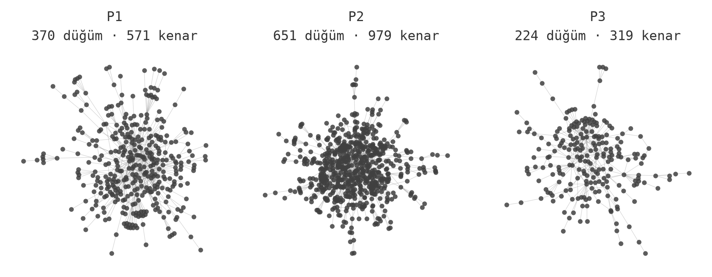
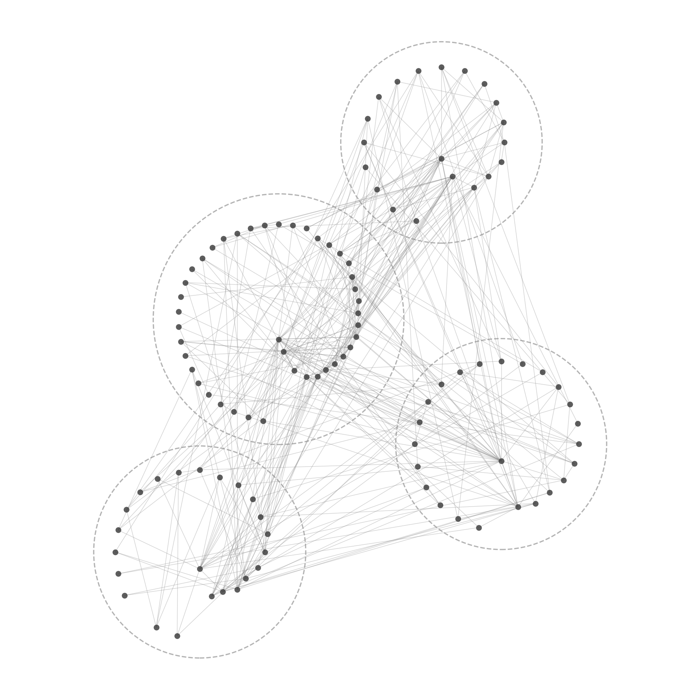

TÜBİTAK 1002-A · Proje No 324K664
Bu araştırma, savaş sonrası dönemde "Türkiye yüksek potansiyele sahip ancak azgelişmiş bir tarım toplumudur" önermesinin, uzman raporları, diplomatik yazışmalar, arşiv belgeleri, gazete ve dergilerden oluşan 1.465 belgelik bir külliyatta nasıl tartışılamaz bir olguya dönüştüğünün arkeolojisini yapıyor. Aktör-ağ kuramı (ANT) çerçevesinde geliştirilen ilişki temelli kodlama sistematiğiyle üretilen etkileşimli aktör-ağ haritaları aşağıda yer alır.
Sorunsal, kuramsal çerçeve ve yöntemin tam açıklaması için Yöntem sayfasına bakınız.



